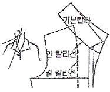
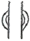

양장기능사 (2008-03-30 기출문제)
1과목: 임의 구분
1. 재봉기의 고장 원인 중 윗실이 끊어질 경우로 가장 옳은 것은?
- 톱니에 결함이 있다
- 노루발 압력에 결함이 있다.
- 바늘에 결함이 있다
- 보내기 기구에 결함이 있다.
(정답률: 65%)

2. 다음 중 시착 방법이 아닌 것은?
- 옷감의 올이 바로 놓였는가 확인한다.
- 안감이 겉감으로 되었는가를 확인한다.
- 칼라의 형, 크기가 적당한가를 확인한다.
- 전체적인 실루엣이 알맞은가를 확인한다.
(정답률: 54%)
3. 150㎝ 폭의 옷감으로 긴 소매 윈피스 드레스를 만들 때 가장 적합한 옷감의 필요량은? (단, 가슴들레 84㎝, 소매길이 57㎝, 옷길이 96㎝)
- 150 ~ 170㎝
- 180 ~ 200㎝
- 210 ~ 230㎝
- 250 ~ 270㎝
(정답률: 48%)
4. 가슴의 유두점을 지나는 수평부위를 돌려서 재는 계 측 항목은?
- 목둘레
- 등 길이
- 가슴둘레
- 유두길이
(정답률: 100%)
5. 올이 풀리지 않는 옷감의 시접을 핑킹가위로 자른 다음 가르는 바느질은?
- 접어박기 가름솔(clean stitched seam)
- 휘감치기 가름솔(over cast seam)
- 핑크 가름솔(pinked sdam)
- 홈질 가름솔(self-stitching seam)
(정답률: 80%)
6. 옷감의 패턴 배치 방법으로 옳은 것은? (문제 오류로 실제 시험에서는 3, 4번이 정답처리 되었습니다. 여기서는 3번을 누르면 정답 처리 됩니다.)
- 줄무늬는 옷감 정리에서 줄을 사선으로 정리한다.
- 패턴이 작은 것으로부터 큰 것은 작은 것 사이에 배치한다.
- 옷감의 안쪽에 옷본을 배치한다.
- 짧은 털이 있는 옷감은 털의 방향을 위로 배치한다.
(정답률: 77%)
7. 목둘레의 완성선을 바이어스 테이프로 처리할 때 시 접의 처리법으로 가장 옳은 것은?
- 시접을 두지 않는다.
- 1㎝정도의 시접을 둔다.
- 2㎝정도의 시접을 둔다.
- 3㎝정도의 시접을 둔다.
(정답률: 58%)
8. 합성섬유를 다림질할 때 경화현상과 관계가 먼 것 은?
- 섬유가 가열로 연화되어 섬유 자체가 융착-냉 각 후에도 그대로 굳어지는 현상이다.
- 비닐론이나 아세테이트를 고온으로 가열하면 나타나는 현상이다.
- 수분이 있을 경우가 정도가 더 심하다.
- 고온으로 다리면 열에 약한 염료가 변색되는 현상이다.
(정답률: 알수없음)
9. 세탁을 자주 해야 하는 운동복이나 아동복에 많이 쓰 이는 바느질 방법은?
- 쌈솔
- 통솔
- 가름솔
- 평솔
(정답률: 90%)
10. 재봉기의 직업별 분류 중 가정용 재봉기에 해당되는 것은?
- 103종
- 96종
- 31종
- 15종
(정답률: 72%)
11. 키가 크고 마른 체형에 가장 어울리는 선은?
- 곡선
- 수직선
- 수평선
- 바이어스선
(정답률: 72%)
12. 두꺼운 모직물을 재봉기로 바느질을 할 때 알맞은 실과 바늘로서 옳은 것은?
- 면사50's, 9호 바늘
- 합섬사 60D/2×3, 14호 바늘
- 면사80's, 16호 바늘
- 견사 35D/4×3, 16호 바늘
(정답률: 59%)
13. 장식 바느질법 중 핀턱(pin tuck)에 대하여 설명으로 옳은 것은?
- 주름량이 적은 것으로, 블라우스나 원피스 등에 쓰이며 특히, 아동복에 사용된다.
- 불규칙한 작은 주름이 많이 모인 것으로, 천의 두께에 따라 필요량이 다르나 일반적으로 완성 폭의 2~3배로 필요량을 잡아 준다.
- 장식적인 디테일로 쓰이며, 개더를 규칙적으로 여러줄 잡아 주어 여유분을 부드럽게 표현한다.
- 손바늘질을 이용하여 규칙적인 바늘땀으로 주름 을 잡는 방법으로, 아동복이나 여성복에 장식용으로 쓰이며 부드럽고 귀여운 느낌을 준다.
(정답률: 67%)
14. 블라우스를 제도할 때 가장 먼저 제도하는 것은?
- 소매
- 앞길
- 뒷길
- 칼라
(정답률: 71%)
15. 제품 생산요인 중 제조경비에 포함되지 않는 것은?
- 기기수선료
- 원자재비
- 운반비
- 세금
(정답률: 38%)
16. 고어 스커트의 설명으로 옳은 것은?
- 엉덩이 둘레선에서 수직으로 내려오는 스커트
- 스커트의 실루엣을 정하여 폭으로 등분한 후 다트를 잘라 내어 이어서 만든 스커트
- 원형에 절개선을 넣어 다트를 접어 없애줌으로써 플레어분을 벌려 주는 스커트
- 위에서 아래까지 주름을 잡은 스커트
(정답률: 88%)
17. 인체의 각 부위를 세밀하게 계측하여 제도하는 방법으로, 인체의 많은 부위를 계측하여 제도하기 때문에 체형 특징에 잘 맞는 원형을 얻을 수 있는 제도 방법은?
- 단촉식 제도법
- 중촌식 제도법
- 장촌식 제도법
- 혼합식 제도법
(정답률: 95%)
18. 굴신체형의 설명으로 옳은 것은?
- 배가 나온 체형이다.
- 어깨가 처진 체형이다.
- 등이 굽은 체형이다.
- 가슴이 큰 체형이다.
(정답률: 93%)
19. 다음 그림을 활용한 디자인의 칼라는?

- 셔츠칼라
- 케이프 칼라
- 컨버터블 칼라
- 만다란 칼라
(정답률: 67%)
20. 스커트 봉제시 알맞은 순서는?
- 옆솔기 박기→지퍼달기→다트박기
- 다트박기→지퍼달기→옆솔기 박기
- 다트박기→옆솔기 박기→지퍼달기
- 지퍼달기→다트박기→옆솔기 박기
(정답률: 57%)
2과목: 임의 구분
21. 상반신이 굴신체인 경우 일반적인 보정법에 대한 설명 중 틀린 것은?
- 등길이의 부족량을 절개 하여 늘려 준다
- 앞중심의 길이가 남아 군주름이 생기므로 접어 줄여 준다.
- 등의 돌출로 인해 어깨다트를 늘려준다
- 전체적으로 앞몸판의 사이즈를 키워준다
(정답률: 92%)
22. 겉감의 기본 시접 중 가장 부적당한 것은?
- 어깨와 옆선2㎝
- 진동둘레 1.5㎝
- 스커트단 1 ~ 2㎝
- 칼라 1㎝
(정답률: 93%)
23. 치수를 잴 때 어깨 끝점부터 팔꿈치를 지나 손목점 까지의 길이를 재는 부위는?
- 가슴둘레
- 어깨 넓이
- 소매길이
- 등길이
(정답률: 91%)
24. 원가계산방법의 설명으로 옳은 것은?
- 제조원가= 재료비+인건비+판매간접비
- 제조원가= 재료비+인건비+제조경비
- 판매가= 총원가+인건비
- 판매가= 제조원가+이익
(정답률: 84%)
25. 다음 그림과 같은 의복제도 부호의 의미는?

- 주름
- 직각
- 늘림
- 맞춤
(정답률: 알수없음)
26. 블라우스 스웨터 위에 입는 원피스 스타일의 스커트는?
- 티어 스커트
- 점퍼 스커트
- 디바이드 스커트
- 개더 스커트
(정답률: 64%)
27. 다음 중 밴드나이프 재단기의 설명이 아닌 것은?
- 금형을 원단 위에 놓고 전기나 유압으로 압축시켜 자르는 재단기로 다이 커팅기 또늘 클리커라고도 한다.
- 칼날이 좁고 날카롭기 때문에 예리한 것도 쉽게 재단할 수 있다
- 적은 장수에서부터 높이 30㎝까지 쌓은 원단도 쉽게 재단할 수 있다.
- 정확한 재단을 할 수 있으므로 칼라. 커프스, 주머니 뚜껑 등 정확성이 필요한 재단에 적합하다.
(정답률: 알수없음)
28. 스커트의 허리와 옆선을 내어 수정해야 할 경우는?
- 배가 나와서 배 부분이 너무 낄 경우
- 편평한 배로 인하여 앞 스커트와 옆 바지에 군주름이 생길 경우
- 한쪽 엉덩이가 높거나 커서 한쪽이 당길 경우
- 뒤가 끼는 경우
(정답률: 37%)
29. 재봉기로 바느질할 때 천 보내기가 나쁜 경우가 아닌 것은?
- 톱니에 결함이 있는 경우
- 노루발에 결함이 있는 경우
- 죔새에 결함이 있는 경우
- 바늘에 결함이 있는 경우
(정답률: 86%)
30. 다음 중 슬랙스의 구성법과 같은 원리로 제도하는 스커트는?
- 디바이드 스커트
- 플리츠 스커트
- 개서 스커트
- 티어 스커트
(정답률: 알수없음)
31. 다음 중 능직물에 속하는 것은?
- 서지
- 광목
- 양단
- 코르덴
(정답률: 60%)
32. 양털과 비교한 캐시미어 털의 성질 중 틀린 것은?
- 보온성이 우수하나 탄력성이 없다
- 부드럽고 가벼우며 광택이 우수하다.
- 생산량이 적어 가격이 비싼 편이다.
- 가늘고 부드러운 털과 굵고 길며 거칠고 뻣뻣한 털이 섞여서 얻어진다.
(정답률: 70%)
33. 실의 굵기를 표시하는 방법 중 항장식 번수에 의해서 굵기를 표시하는 섬유는?
- 면사
- 마사
- 모사
- 견사
(정답률: 39%)
34. 다음 천연섬유 중 필라멘트사에 해당되는 것은?
- 면 섬유
- 양털섬유
- 명주 섬유
- 마 섬유
(정답률: 67%)
35. 다음 중 분산염료로 염색이 잘 되는 섬유는?
- 비닐론
- 양모
- 나일론
- 폴리에스테르
(정답률: 25%)
36. 견 섬유의 성질을 살리고, 자외선에 취하되는 것을 막는 방법으로 처리하는 것은?
- 알칼리 처리
- 탄닌산 처리
- 실켓트화 처리
- 염소 처리
(정답률: 55%)
37. 무명섬유의 강도에 영향을 미치는 부분은?
- 규칙적으로 배열된 결정부분
- 불규칙하게 배열된 비결정부분
- 속이 비어 있는 타원형의 중공
- 불규칙하게 변하는 천연꼬임 방향
(정답률: 19%)
38. 다음 섬유 중 내일광성이 가장 좋은 것은?
- 아크릴
- 견
- 모
- 나일론
(정답률: 알수없음)
39. 적당한 온, 습도하에 매끄러운 롤러의 강한압력으로 직물에 광택을 주는 가공법은?
- 방추가공
- 의마 가공
- 실켓가공
- 캘린더 가공
(정답률: 53%)
40. 코르세이나 브래지어 등의 속옷에 고무 대신 쓸 수 있는 합성 섬유는?
- 폴리아미드계
- 폴리에스테르계
- 폴리우레탄계
- 폴리아크리로니트릴계
(정답률: 60%)
3과목: 임의 구분
41. 의복의 배색조화에 관한 설명 중 틀린 것은?
- 저채도인 색의 면적을 넓게 하고 고채도의 색을 좁게하면 균형이 맞고 수수한 느낌이 든다.
- 고채도인 색의 면적을 넓게 하고 저채도의 색을 좁게 하면 매우 화려한 배색이 된다
- 고명도의 색을 좁게 하고 저명도의 색을 넓게 하면 명시도가 낮아 보인다.
- 한색계의 색을 넓게 하고 난색계의 색을 좁게 하면 약간 침울하고 가라앉은 듯한 느낌이 든다.
(정답률: 37%)
42. 색입체에 관한 설명 중 틀린 것은?
- 색입체의 축은 무채색이다.
- 축으로부터 멀리 떨어질수록 채도가낮다
- 축에서 위로 갈수록 명도가 높아진다
- 축울중심으로 각색상들이 배열되어 있다
(정답률: 59%)
43. 선의 공통성이 있기 때문에 안정적이고 균일한 분위기를 나타내는 조화는?
- 부조화
- 3각조화
- 대비조화
- 유사조화
(정답률: 79%)
44. 마른 사람의 옷 색상으로 가장 어울리지 않는 것은?
- 파랑
- 흰색
- 노랑
- 검정
(정답률: 89%)
45. 중간혼합의 일종인 회전혼합의 특징으로 틀린 것 은?
- 회전혼합되는 색은 명도와 채도가 색과 색사이의 중간정도의 색으로 보인다.
- 평균혼합으로서 명도와 채도가 평균값으로 지각된다.
- 채도는 채도가 높은 색 방향으로 기울어 보인다.
- 명도는 혼합되는 색 중 명도가 낮은 색으로 좀더 기울어 보인다.
(정답률: 42%)
46. 명랑, 유쾌, 희망의 느낌을 주는 색은?
- 노랑
- 회색
- 자주
- 검정
(정답률: 96%)
47. 난색계통의 색상에서 갖는 느낌이 아닌 것은?
- 전진적
- 수동적
- 활동적
- 충동적
(정답률: 70%)
48. 다음 중 대비조화가 아닌 것은?
- 보색 대비에 따른 조화
- 원과 타원의 조화
- 원과 삼각형의 조화
- 원과 사각형의 조화
(정답률: 67%)
49. 다음 중 형태의 존재를 인식하기 위하여 의복에 사용되는 인간의 감각이 아닌 것은?
- 시각
- 후각
- 촉각
- 청각
(정답률: 39%)
50. 다음 중 차가운 느낌을 갖는 색으로만 나열된 것은?
- 빨강, 초록, 파랑
- 자주, 노랑, 청록
- 빨강, 주황, 노랑
- 초록, 파랑, 남색
(정답률: 89%)
51. 다음 중 능직물의 특성은?
- 삼원 조직 중 조직점이 가장 많다.
- 표면이 매끄럽고 광택이 가장 좋다
- 구김이 잘 생긴다.
- 3올 이상으로 만들어지며 표면에 능선이 나타난다.
(정답률: 74%)
52. 다음 중 평직물에 속하는 것은?
- 광목
- 데님
- 진
- 사틴
(정답률: 70%)
53. 다음 중 염소계 산화 표백제에 속하는 것은?
- 치아염소산나트륨
- 아황산수소나트륨
- 하이드로설파이트
- 아황산
(정답률: 66%)
54. 피복의 성능을 관계되는 것끼리 연결한 것 중 틀린 것은?
- 감각적 성능 - 촉감
- 위생적 성능 - 형태 안정성
- 내구적 성능 - 강도와 마모성
- 관리적 성능 - 충해
(정답률: 60%)
55. 피복류의 감각적 성능 중 일반적으로 드레이프성이 가장 요구되는 피복은?
- 양말
- 작업복
- 속옷
- 외출복
(정답률: 40%)
56. 다음 중 부직포의 특성 설명으로 틀린 것은?
- 함기량이 많아 가볍고 따뜻하다.
- 절단부분이 잘 풀리지 않는다.
- 방향에 따른 성질의 차가 거의 없다
- 마찰에 의한 내구성이 좋다.
(정답률: 57%)
57. 좀먹는 벌레로부터 피해를 방지하기 위한 가공은?
- 방축 가공
- 방추 가공
- 방충 가공
- 방오 가공
(정답률: 82%)
58. 다음 중 편성물의 보온성에 가장 영향을 미치는 것은?
- 함기성
- 인장성
- 굴곡성
- 마찰성
(정답률: 87%)
59. 견 직물에 대한 곰팡이의 피해로서 틀린 것은?
- 견직물의 무게를 증가시킨다.
- 특히 신도의 저하가 심하다
- 연사에 비하여 생사는 손상이 심하다.
- 광택이 저하된다.
(정답률: 79%)
60. 블라우스나 드레스 셔츠를 구입할 때 유의할 사항 중 틀린 것은?
- 몸에 잘 맞아야 한다.
- 칼라의 좌우가 편편하게 잘 놓여 있어야 한다.
- 바느질 솔기의 너비가 알맞고, 가장자리의 처리가 깨끗한 것이어야 한다.
- 흡습성이 좋고, 몸에 닿아 감촉이 좋은 것이어 야 한다.
(정답률: 65%)